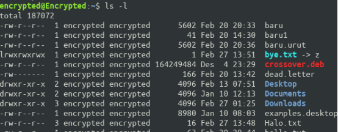

LAPORAN SISTEM OPERASI
Tugas 2-Operasi Input Output
TI-1D-09
Tugas Pendahuluan
- Perintah directory :
- pwd : Perintah yang digunakan untuk melihat posisi di direktori mana kita berada saat ini.
- cd : Perintah yang digunakan untuk masuk ke dalam direktori, bisa juga digunakan untuk keluar dari direktori.
- mkdir : Perintah yang digunakan untuk membuat direktori.
- rmdir : Perintah yang digunakan untuk mrnghapus direktori.
- Perintah manipulasi file :
- cp : Perintah yang digunakan untuk mengcopy file .
Format : cp
- mv : Perintah yang digunakan untuk memindahkan / cut file .
Format : mv
- rm : Perintah yang digunakan untuk menghapus file.
Format : rm
- cp : Perintah yang digunakan untuk mengcopy file .
Format : cp
- Symbolik Link :
- Hard Link : Digunakan untuk membuat link pada sebuah file, dan hasil link dari file tersebut sama persis dengan yang aslinya. Dan bila file link/yang asli diubah/dihapus file lain yang terhubung juga akan berubah. Untuk linknya juga terbatas hanya dalam satu partisi.
- Soft Link : Digunakan untuk membuat link namun dalam bentuk shortcut. Dan bila menggunakan soft link, Link Count file yang asli tidak akan berubah, berbeda dengan hard link. Untuk linknya bisa berbeda partisi.
- Perintah :
- file : Digunakan untuk melihat jenis file.
- find : Digunakan untuk mencari file.
- which : Digunakan untuk mengetahui letak direktori yang kita inginkan.
- locate : Digunakan untuk mencari file pada semua direktori dengan lebih cepat dan ditampilkan dengan path yang penuh.
- grep : Digunakan untuk mencari text pada file.
Percobaan1: Direktori
Melihat direktori HOME
$ pwd , $ echo $HOMEAnalisa : percobaan ini digunakan iuntuk melihat direktori home dengan perintah pwd.Melihat direktori actual dan parent direktori
$ pwd , $ cd . , $ pwd , $ cd .. , $ pwd , $ cdAnalisa : dengan perintah cd, percobaan ini dimaksudkan untuk melihat actual direktori dan parental direktori. Digunakan untuk melihat direktori parent jadi ketika diketikkan perintah pwd maka akan muncul parent direktori, jadi ketika diberi perintah pwd direktori parent akan muncul.Membuat satu direktori, lebih dari satu direktori atau sub direktori
$ pwd , $ mkdir A B C A/D A/E B/F A/D/A , $ ls –lAnalisa : mkdir digunakan untuk membuat direktori, perintah mkdir diatas berarti membuat direktori A, B dan C direktori home, kemudian di folder A, ada subdirektori yaitu D, E dan didalam subdirektori D ada subdirektori A, dan juga di direktori B ada subdirektori F.Menghapus satu atau lebih direktori hanya dapat dilakukan pada direktori kosong dan hanya dapat dihapus oleh pemiliknya kecuali bila diberikan ijin aksesnya.
$ rmdir B , $ ls –l B , $ rmdir B/F B , $ ls –l BAnalisa : Pada percobaan ini kita mencoba untuk menghapus direktori dengan menggunakan perintah rmdir. Rmdir B error karena direktori tidak kosong sehingga menyebabkan direktori tidak dapat dihapus. ls –l B terdapat pesan error dikarenakan file atau direktori B sudah dihapus melalui perintah rmdir B/F B.
5.Navigasi direktori dengan instruksi cd untuk pindah dri satu direktori ke direktori lain.
$ pwd
$ ls –l
$ cd A
$ pwd
$ cd ..
$ pwd
$ cd /home/<user>/C
$ pwd
$ cd /<user>/C
$ pwd
Analisa : Pada percobaan ini kita mencoba untuk berpindah dari satu direktori ke direktori yang lain dengan menggunakan pperintah cd. Terjadi error karena tidak ada nama atau direktori tempat kita akan pindah.
Percobaan 2 : Manipulasi file
- Perintah cp untuk mengkopi file atau sebuah direktori
$ cat > contohMembuat sebuah file [Ctrl –d]$ cp contoh contoh1$ ls –l$ cp contoh A$ ls –l A$ cp contoh contoh1 A/D$ ls –l A/D
Analisis : Percobaan ini adalah percobaan untuk mengcopy file, jadi kita buat dulu sebuah file, lalu file tersebut dicopy dan ditampilkan seluruh informasinya menggunakan ls –l.
- Perintah mv untuk memindah file
$ mv contoh contoh2 , $ ls –l , $ mv contoh1 contoh2 A/D , $ ls –l A/D , $ mv contoh contoh1 C , $ ls –l CAnalisis : Percobaan ini adalah percobaan untuk memindah file menggunakan perintah mv, jadi kita pindh dulu filenya dang anti dengan nama lain, lalu dilihat informasinya pada home, jadi setiap setelah melakukan pemindahan itu dilihat informasinya dengan perintahls –l.
3.Perintah rm untuk menghapus file
$ rm contoh2 , $ ls –l , $ rm –l contoh , $ rm –rf A C , $ ls –l
Analisis : percobaan ini adalah percobaan untuk menghapus file dengan menggunakan perintah rm, jadi hapus file dengan nama contoh2, lalu kita hapus file contoh, namun terdapat error karena file tersebut tidak ada didalam home, dan ketika dilihat dengan perintah ls yang ada hanya file contoh1.
Percobaan 3 : Symbolic Link
1.Membuat shortcut (file link)
$ echo “Hallo apa khabar” > halo.txt , $ ls –l , $ ln halo.txt z , $ ls –l , $ cat z
Analisis : link adalah sebuah teknik untuk memberikan lebih dari satu nama file dengan data yang sama. Pada perintah diatas dibuat link z dari halo.txt, jadi kita membuat file dengan nama halo.txt yang berisi hallo apa kabar, lalu dilihat pada home, apa saja direktori yang sedang aktif, dan salah satunya adalah halo.txt itu, lalu kita membuat direktori dengan nama mydir, lalu melihat isi direktori mydir yaitu file halo.txt dan membuat link.
Percobaan 4 : Melihat isi file
$ ls –l , $ file halo.txt , $ file bye.txt
Analisis : percobaan untuk melihatisi file yang ada. Jadi, disini kita gunakan perintah ls –l yang berfungsi untuk melihat semua yang informasi keseluruhan yang ada didalam home dan kemudian melihat informasi tentang file halo.txt dan bye.txt.

Percobaan 5 : Mencari file
- Perintah find
$ find /home –name “*.txt” –print > myerror.txt$ cat myerror.txt$ find . –name “*.txt” –exec wc –l ‘{}’ ‘;’
Percobaan 6 : Mencari text pada file
$ grep Hallo *.txt
Analisis : perintah grep digunakan untuk melihat dimana saja isi file yang dituliskan berada.
LATIHAN
- Cobalah urutan perintah tersebut
$ cd,$ pwd,$ ls –al$ cd .,$ pwd,$ cd ..,$ pwd,$ ls –al$ cd..$ pwd$ ls –al
$ cd /etc
$ ls –al | more
$ cat passwd
$ cd – , $ pwd
Analisis : Apa yang dilakukan oleh runtutan perintah diatas adalah melakukan penulusuran terhadap home direktori dengan menggunakan perintah cd, pwd, cat dan ls.
Lanjutkan penelusuran pohon pada sistem file menggunakan cd, ls, pwd, dan cat. Telusuri direktori
/bin, /usr/bin, /sbin, /tmp dan /boot./bin /usr/bin /sbin /tmp /boot Analisis : Melakukan penulusuran pada latihan nomer 2 ini sejatinya sama saja dengan latihan 1. Seperti yang ada pada gambar ddiatas missal kita menelusuri direktori /sbin , kemudian menggunakan perintah $ ls untuk menampilkan isi direktori tersebut, maka dapat kita lihat file file seperti blockdev, raw, route , dll terdapat pada direktori ini. Perintah pwd digunakan untuk menampilkan nama direktori dimana anda saat itu sedang berada.Telusuri direktori /dev. Identifikasi perangkat yang tersedia. Identifikasi tty (terminal) Anda (ketik who am i); siapa pemilik tty Anda (gunakan
ls –l) Analisis : dari latihan diatas setelah menelusuri direktori /dev dengan perintah cd, kemudian mengidentifikasi terminal yang setelah digunakan perintah whoami ternyata adalah student. Selanjutnya digunakan perintah ls –l untuk melihat siapa saja pemilih terminal tersebutTelusuri direktori /proc. Tampilkan isi file interrupts, devices, cpuinfo, meminfo, dan uptime menggunakan perintah cat. Dapatkah Anda melihat mengapa direktori /proc disebut pseudo-filesystem yang memungkinkan akses ke struktur data kernel ?
Interrupts Devices Cupinfo Meminfo Uptime Analisis : seperti yang dikatakan pada soal, maka gambar-gambar diatas bertujuan untuk menampilkan isi file interrupts, devices, cpuinfo, meminfo, dan uptime dengan menggunakan perintah cat. Dan untuk pertanyaan mengapa direktori /proc disebut pseudo-filesystem yang memungkinkan akses ke struktur data kernel ? hal ini dikarenakan direktori /proc dibuat diatas RAM degan sistem file yang diatur oleh kernel itu sendiri.
Ubahlah direktori home ke user lain secara langsung menggunakan cd –username. Analisis : Setelah sebelumnya berada pada direktori ./proc , maka dengan satu perintah yaitu cd –username direktori home akan indah ke username yang dimaksudkan.
Ubah kembali ke direktori home Anda Analisis : untuk kembali ke direktori home, gunakan perintah
$ cd ..Buat subdirektori work dan play Analisis 7 : membuat direktori dengan perintah mkdir , setelah di beri perintah ls untuk melihat isi direktori, dapat dilihat terdapat 2 buah direktori baru yaitu play dan work.
Hapus subdiretori work Analisis 8 : Menghapus sebuah direktori kosong digunakan perintah $ rmdir
Copy file /etc/passwd ke direktori home Anda. Analisis 9 : format perintah cp untuk menyalin suatu file dari suatu direktori ke direktori lainnya adalah -> $ cp
Pindahkan ke subdirektori play.
Analisis 10: format perintah mv untuk memindahkan suatu file dari suatu direktori ke direktori lainnya adalah -> $ mv
Ubahlah ke subdirektori play dan buat symbolic link dengan nama terminal yang menunjuk ke perangkat tty. Apa yang terjadi jika melakukan hard link ke perangkat tty?
Analisis : cara masuk subdirektori play adalah dengan menggunakan perintah cd cara membuat hardlink nya adalah dengan perintah ln –s.
Buatlah file bernama hello.txt yang berisi kata “hello word”. Dapatkah Anda gunakan “cp” menggunakan “terminal” sebagai file asal untuk menghasilkan efek yang sama ? Analisis : setelah membuat sebuah file dengan fungsi cat. Ternyata kita bisa menggunakan cp untuk menggunakan terminal sebagai file asal.
Copy hello.txt ke terminal. Apa yang terjadi ? Analisis : file hello.txt tidak bisa dicopy ke terminal karena terlalu banyak symbolic link.
Masih direktori home, copy keseluruhan direktori play ke direktori bernama work menggunakan symbolic link. Analisis : cara membuat symbolic link seperti pada gambar diatas adalah dengan menggunakan perintah ln s.
Hapus direktori work dan isinya dengan satu perintah. Analisis : Menghapus sebuah direktori dengan 1 perintah digunaka rm –rf. Setelah di ls, direktori work sudah tidak ditemukan.
LAPORAN RESMI
Analisa hasil percobaan yang Anda lakukan
Analisa setiap hasil tampilannya Sudah dikerjakan pada bab laporan sementara di setiap percobaannya.
Pada percobaan 1 point 3 buatlah pohon dari struktur file dan direktori
- Bila terdapat pesan errorjelaskan penyebabnya. Sudah terdapat pada analisis
Kerjakan latihan diatas dan analisa hasilnya. Latihan berserta analisanya sudah terdapat pada bab latihan.
Berikan kesimpulan dari praktikum ini. Kesimpulan : Sistem file pada linux menyerupai tree yang dimulai dari root kemudia direktori dan subdirektori. Ada 2 macam symbolic link yaitu softlink dan hardlink.